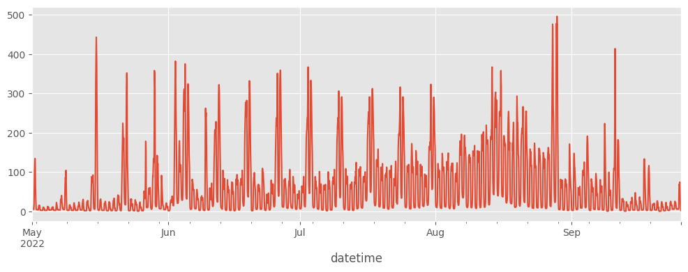
Summary
I developed a model to forecast the hourly demand of parking lots for a seaside garage with multiple seasonlities. The resulting model achieves an average out-of-sample mean absolute error of 30 lots for with a horizon of 6 hours, 50 lots with a week. The model can be realiably used to help operation managers decide an apt number of workers to accommodate the demand. It is also the first step for a dynamic pricing strategy.
The dataset is novel: I personally collected and cleaned the dataset from the firm.
Business requirements
The forecasting horizons are the next few hours and the next few days. Foreseeing the next few hours and the next few days gives the operation manager the possibility to know in advance at different time frame when to call other workers to work (and when to dismiss them). A dynamic pricing strategy can benefit from the same horizons.
Dataset
The original dataset consists of a SQL table. Each entry records the datetime of arrival and the datetime of departure the type of vehicle and the paid amount.
The snippet computes the number of cars for a given frequency
The frequency chosen is the hour. A shorter time span would increase the computational cost without providing additional value for practical operations. The resulting dataset can be found in './data/cars-per-hour.csv.
The time series shows the hourly car count from May to almost the end of September, 2022. There are: * a weekly period * a daily sub-period * Saturdays and Sundays have higher averages * there is an increasing trend that peaks in the middle of august, then it dies * a spike around June 2, and August 15, both a national holidays
| cars | |
|---|---|
| datetime | |
| 5 | 29.873656 |
| 6 | 72.045833 |
| 7 | 82.106183 |
| 8 | 97.469086 |
| 9 | 32.833333 |
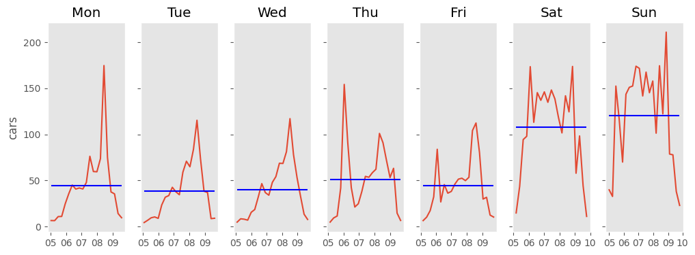
The red line shows for average number of cars each month and day of the week. The blue line shows the average number of cars for each day of the week. The plot confirms that: * non-working days show an average which is higher and double the average of working days. * June Thursdays have a higher because of June 2 national holiday happened on a Thursday. * increasing trend from May to August, especially for working days.
Methods
Modeling with ARMA
Following the Box Jenkins method (Box, G.E.P. and G.M. Jenkins (1970) Time series analysis: Forecasting and control, San Francisco: Holden-Day.), the first question to ask ourselves when modeling with ARMA processes is whether our process is (weakly) stationary.

in our case, it is blatantly non-stationary: 1. the variance increases up to the middle of August, fading afterward 2. it is weekly periodic, and there is a daily sub-period,
First, we stabilize the variance using the Box-Cox transformation and add one to avoid taking the log of a null value.
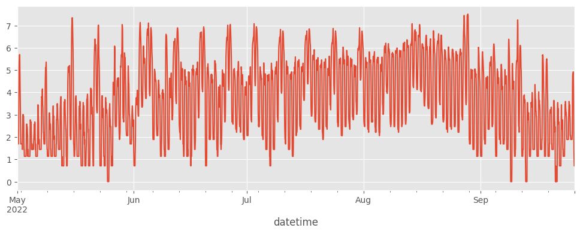
Box-Cox parameter:0.0596The parameter leans toward 0 rather than 0.5, implying that the variance increases almost quadratically with the trend.
Next, we deseasonalize with period equal to a week.
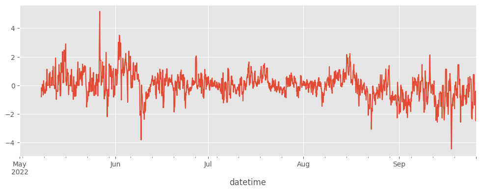
The time series resembles white noise. Let’s test whether it needs further differencing.
The augmented Dickey-Fuller statistical test assumes a unit root exits in the time series, implying that the time series must be differenced.
ADF test p-value: 0.0000The null hypothesis is rejected, so no further differentiation is required.
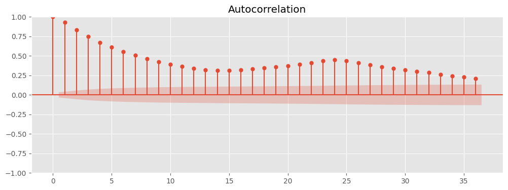
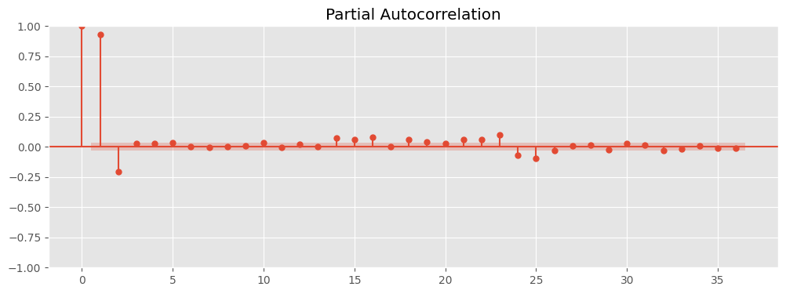
The sample autocorrelation function (ACF) and sample partial autocorrelation function (PACF) suggests an autoregressive model \(AR(p)\), with \(p \leq 2\) because: * the ACF decays expotentially up until the 24-hour lag. * the PACF are below the 95% threshold after the third lag.
Let’s investigate the periodic patterns by extending the time frame to incorporate the weekly period.
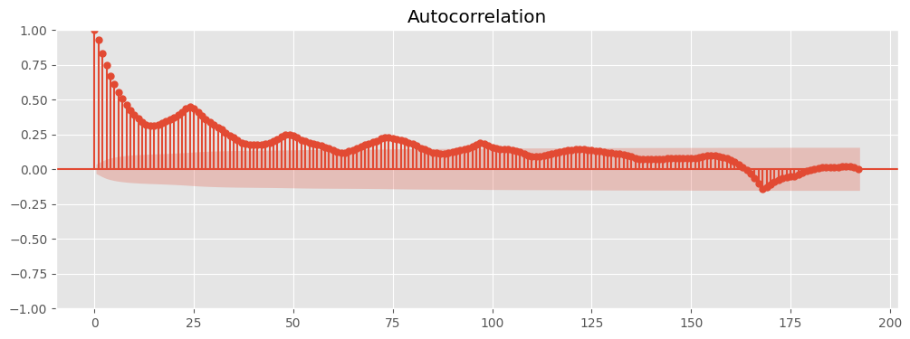
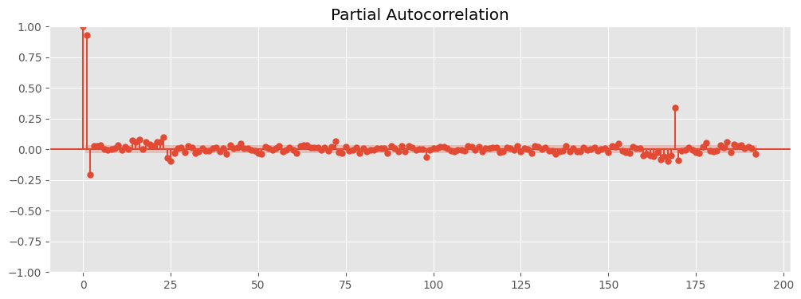
The extended ACF and PACF show that not all periodic information has been extracted from the time series as the PACF shows elements above threshold values arount 24-hour lag and 168-hour lag. Let us apply a second order seasonal difference
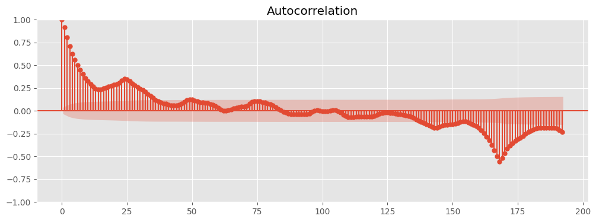
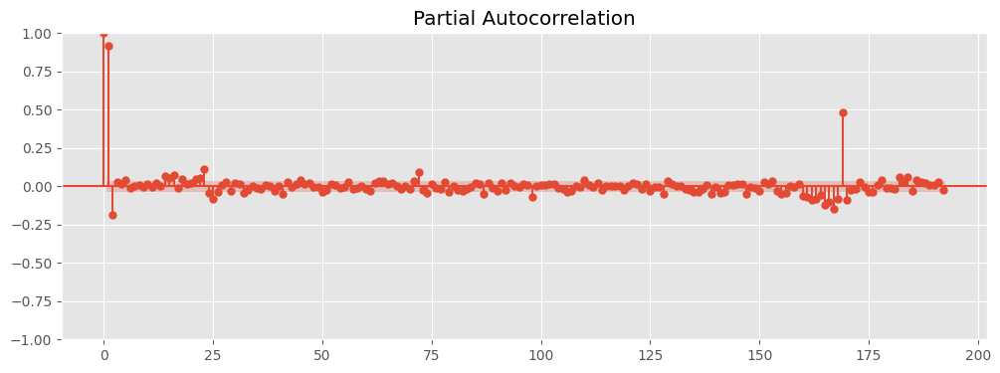
The PACF above threshold values are heightened. So the differencing process is subtler than a second order differentiation. Nontheless, let’s look at the AR(2) model in-sample evalutation
| Dep. Variable: | x | No. Observations: | 3552 |
|---|---|---|---|
| Model: | SARIMAX(2, 0, 0) | Log Likelihood | -789.410 |
| Date: | Sun, 21 Jun 2026 | AIC | 1584.820 |
| Time: | 16:54:34 | BIC | 1603.346 |
| Sample: | 05-01-2022 | HQIC | 1591.426 |
| - 09-25-2022 | |||
| Covariance Type: | opg |
| coef | std err | z | P>|z| | [0.025 | 0.975] | |
|---|---|---|---|---|---|---|
| ar.L1 | 1.1213 | 0.011 | 99.965 | 0.000 | 1.099 | 1.143 |
| ar.L2 | -0.2073 | 0.012 | -17.070 | 0.000 | -0.231 | -0.183 |
| sigma2 | 0.0933 | 0.001 | 79.714 | 0.000 | 0.091 | 0.096 |
| Ljung-Box (L1) (Q): | 0.09 | Jarque-Bera (JB): | 8241.10 |
|---|---|---|---|
| Prob(Q): | 0.76 | Prob(JB): | 0.00 |
| Heteroskedasticity (H): | 0.91 | Skew: | 0.15 |
| Prob(H) (two-sided): | 0.09 | Kurtosis: | 10.46 |
Warnings:
[1] Covariance matrix calculated using the outer product of gradients (complex-step).
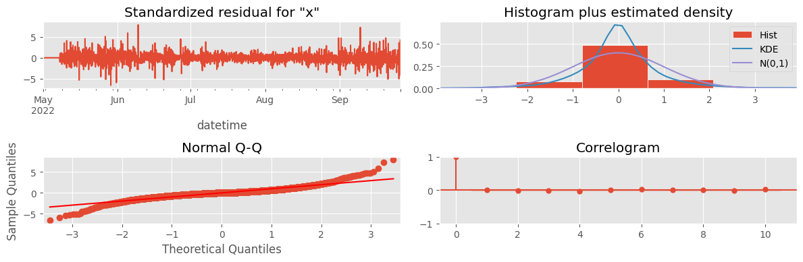
On one hand, the ACF of the residuals looks like white noise, hence the \(AR(2)\) has good fit. On the other hand, the estimated density function of the residuals show high kurtosis. By looking at the time-series plot we determine that the majority of the samples in the tails belong to the months of May and June and to September, months with a higher variance.
| Dep. Variable: | x | No. Observations: | 3552 |
|---|---|---|---|
| Model: | SARIMAX(2, 0, 0) | Log Likelihood | -789.410 |
| Date: | Sun, 21 Jun 2026 | AIC | 1584.820 |
| Time: | 16:54:34 | BIC | 1603.346 |
| Sample: | 05-01-2022 | HQIC | 1591.426 |
| - 09-25-2022 | |||
| Covariance Type: | opg |
| coef | std err | z | P>|z| | [0.025 | 0.975] | |
|---|---|---|---|---|---|---|
| ar.L1 | 1.1213 | 0.011 | 99.965 | 0.000 | 1.099 | 1.143 |
| ar.L2 | -0.2073 | 0.012 | -17.070 | 0.000 | -0.231 | -0.183 |
| sigma2 | 0.0933 | 0.001 | 79.714 | 0.000 | 0.091 | 0.096 |
| Ljung-Box (L1) (Q): | 0.09 | Jarque-Bera (JB): | 8241.10 |
|---|---|---|---|
| Prob(Q): | 0.76 | Prob(JB): | 0.00 |
| Heteroskedasticity (H): | 0.91 | Skew: | 0.15 |
| Prob(H) (two-sided): | 0.09 | Kurtosis: | 10.46 |
Warnings:
[1] Covariance matrix calculated using the outer product of gradients (complex-step).
The Ljung-Box test p-value (prob(Q)) points out that the residuals are white noise, confirming that the model has a good fit.
On the contrary, the already cited curtosis and the heteroskedasticity’s test p-value show that the variance of the process is time-dependent despite of the Box-Cox transformation.
A natural continuation is to model the process using Generalized Autoregressive Conditional Heteroskedasticity (GARCH) models that are designed to handle clusters of variance, but this is a story for another time.
Another attempt to handle high variance is to keep into account outliers using dummy variables. In this case, we can add a dummy variable whether a date is a national holiday and a deterministic time variable.
Dynamic regression model with AR(2) errors
AIC: 1565.0938, BIC: 1595.9702
Dynamic regression model with AR(2) errors
AIC: 1569.7316, BIC: 1606.7831As we can see, the increased complexity of the models improves both AIC and BIC. Among the two, the “ct” (constant and trand) is the best one.
| Dep. Variable: | x | No. Observations: | 3552 |
|---|---|---|---|
| Model: | SARIMAX(2, 0, 0) | Log Likelihood | -777.547 |
| Date: | Sun, 21 Jun 2026 | AIC | 1565.094 |
| Time: | 16:54:34 | BIC | 1595.970 |
| Sample: | 05-01-2022 | HQIC | 1576.105 |
| - 09-25-2022 | |||
| Covariance Type: | opg |
| coef | std err | z | P>|z| | [0.025 | 0.975] | |
|---|---|---|---|---|---|---|
| intercept | 0.0537 | 0.010 | 5.277 | 0.000 | 0.034 | 0.074 |
| drift | -2.875e-05 | 4.97e-06 | -5.779 | 0.000 | -3.85e-05 | -1.9e-05 |
| ar.L1 | 1.1151 | 0.011 | 98.738 | 0.000 | 1.093 | 1.137 |
| ar.L2 | -0.2128 | 0.012 | -17.476 | 0.000 | -0.237 | -0.189 |
| sigma2 | 0.0926 | 0.001 | 77.881 | 0.000 | 0.090 | 0.095 |
| Ljung-Box (L1) (Q): | 0.05 | Jarque-Bera (JB): | 7935.65 |
|---|---|---|---|
| Prob(Q): | 0.82 | Prob(JB): | 0.00 |
| Heteroskedasticity (H): | 0.90 | Skew: | 0.12 |
| Prob(H) (two-sided): | 0.07 | Kurtosis: | 10.32 |
Warnings:
[1] Covariance matrix calculated using the outer product of gradients (complex-step).
Point forecast and prediction interval
just a see its capability
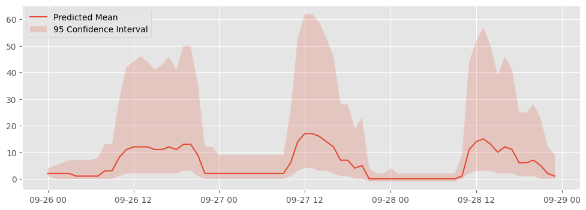
ARMA out-of-sample model selection and evaluation
from the in-sample metrics the best model is a SARIMA(2, 0, 0) with drift. Now we are going to compute the out-of-sample mean absolute error (MAE) and root mean squared error (RMSE) to evaluate the model performance in a cross-validation fashion adapted to the timeseries context: the testing algorithm: 1. randomly select N instants of the time series 2. train each model from instant 0 to the selected instant. 3. forecast h samples 4. compute root mean squared error and mean absolute error
SARIMAX Results
==============================================================================
Dep. Variable: cars No. Observations: 346
Model: SARIMAX(2, 0, 0) Log Likelihood 118.067
Date: Sun, 21 Jun 2026 AIC -226.133
Time: 16:54:35 BIC -206.901
Sample: 05-01-2022 HQIC -218.475
- 05-15-2022
Covariance Type: opg
==============================================================================
coef std err z P>|z| [0.025 0.975]
------------------------------------------------------------------------------
intercept -0.0609 0.059 -1.026 0.305 -0.177 0.055
drift 0.0003 0.000 1.307 0.191 -0.000 0.001
ar.L1 0.9006 0.060 15.103 0.000 0.784 1.017
ar.L2 -0.1060 0.057 -1.846 0.065 -0.218 0.007
sigma2 0.0156 0.001 13.852 0.000 0.013 0.018
===================================================================================
Ljung-Box (L1) (Q): 0.02 Jarque-Bera (JB): 1301.26
Prob(Q): 0.89 Prob(JB): 0.00
Heteroskedasticity (H): inf Skew: 1.02
Prob(H) (two-sided): 0.00 Kurtosis: 12.28
===================================================================================
Warnings:
[1] Covariance matrix calculated using the outer product of gradients (complex-step).
{'converged': False,
'fcalls': 318,
'fopt': np.float64(-0.3412328611629325),
'gopt': array([1.89740853e-02, 1.13541454e+01, 5.89000287e-04, 1.37896343e-03,
3.32751526e-02]),
'iterations': 3,
'warnflag': 2}/Users/nepal/Documents/garage-demand-forecasts/.venv/lib/python3.13/site-packages/statsmodels/base/model.py:607: ConvergenceWarning: Maximum Likelihood optimization failed to converge. Check mle_retvals
warnings.warn("Maximum Likelihood optimization failed to "
/Users/nepal/Documents/garage-demand-forecasts/.venv/lib/python3.13/site-packages/statsmodels/tsa/stattools.py:1431: RuntimeWarning: divide by zero encountered in divide
test_statistic = numer_squared_sum / denom_squared_sumThe model didn’t converge, which is concerning.
The defualt minimization algorithm is the Broyden-Fletcher-Goldfarb-Shanno (BFGS). From the docs, warnflag: 2 means that gradient and/or function calls are not changing which tipically means that the BFGS algorithm couldn’t find a direction of improvement in the objective function, that is, the objective function is flat surface at the given point.
Looking at the model parameters, the drift is almost zero, and the P-value is over ten percent. Let’s drop it and see the results
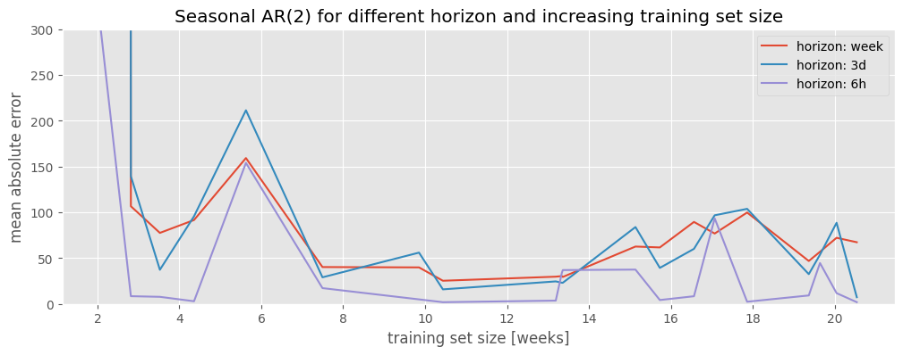
Let’s wrap up the modeling so far. The initial transformation are \[ \begin{split} z_t & = boxcox(cars_t + 1 | \lambda) \\ x_t & = (1 - L^m) z_t \quad m = 24 * 7\\ \end{split} \] then, we modeled \(x_t\) as a second order autoregressive model \[ (1 - \phi_1 L - \phi_2 L^2)x_t = w_t \quad w \in WN(0, \sigma^2)\] finally, we added an intercept: \[ y_t = \beta_0 + x_t \]
Modeling with Exponential Smoothing
Next, we model the time series within ETS (Error, Trend, Seasonal) theoretical framework. It is challenging because the time-series frequency is hourly, and the seasonal period is weekly, leading to a large number of parameters to optimize and to a potentially unstable optimization routine. A typical solution for the large number seasonal parameters is to first remove the seasonal component from the original time-series with a seasonal decomposition method, then fit the ETS model.
The forecast is then obtained as the sum of the deterministic seasonal component and the prediction yielded the ETS.
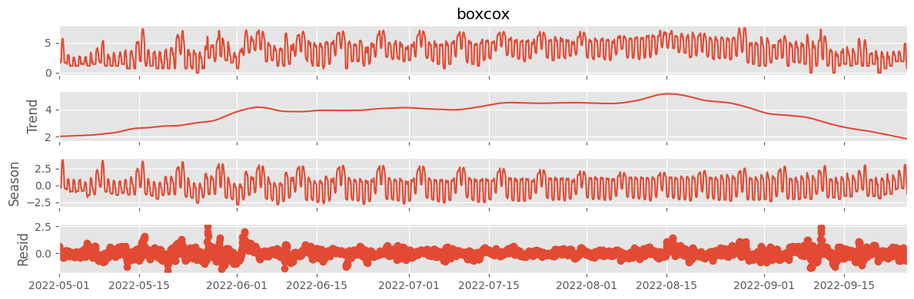
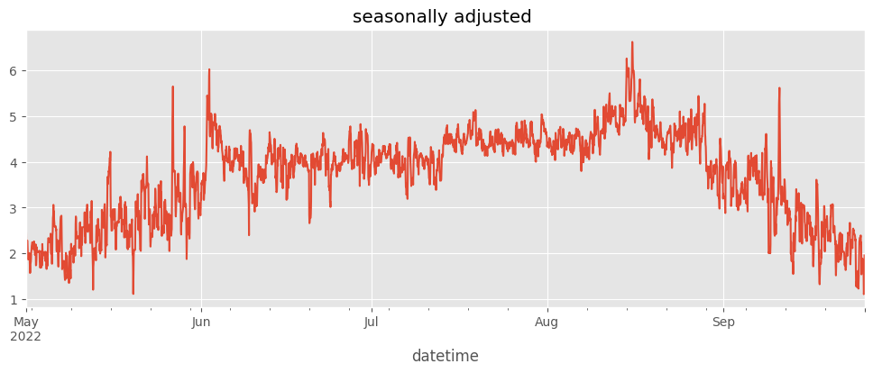
best model ses_a, AIC: -2029.01
best model ses_a, BIC: -2010.48The Akaike’s Information Criterion (AIC) and the Bayesian Information Critirion (BIC) agree that the best model is a fitted simple exponential model. Fun fact: it can be shown that a simple exponential model with additive error is an ARMA(0, 1, 1) ref.
Seasonally adjusted ETS model forecast
\[\hat{y}_{T+h|T} = y_{T + h - m} + ets(T+h) \quad h \leq m\] where * ets(T+h) is a forecast resulting form that method * \(y_{T + h - m}\) is a naive seasonal forecasting method where the prediction is equal to the last seen season
The package statsmodels only offers the ETS forecast, while the naive seasonal forecast must be implemented. The prediction interval are to be computed from package ETSResult class simulate method as well. implementation
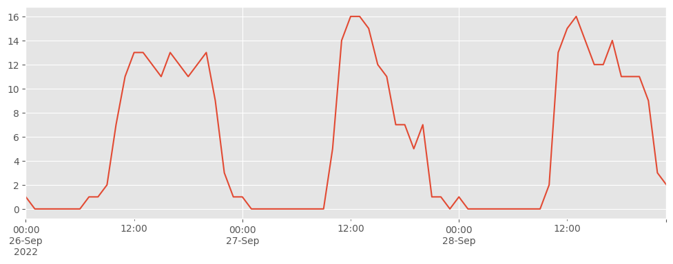
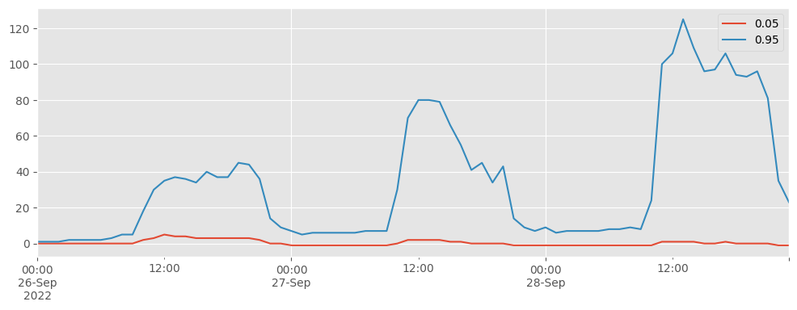
Out-of-sample model evaluation
We are going to apply the same cross-valition routine: 1. randomly select N instants of the time series 2. train each model from instant 0 to the selected instant. 3. forecast h samples 4. compute root mean squared error and mean absolute error
the choice of the random selection of instants is get a better approximation of the generalization error.
Seasonal AR(2) and Seasonal SES comparison
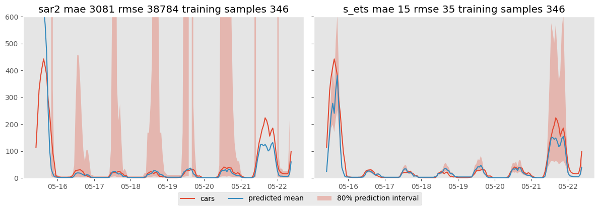
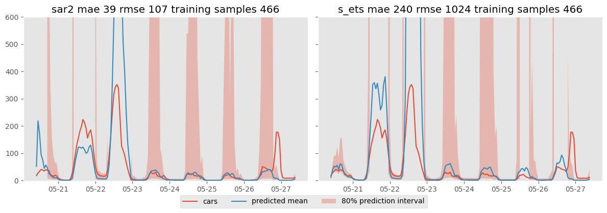
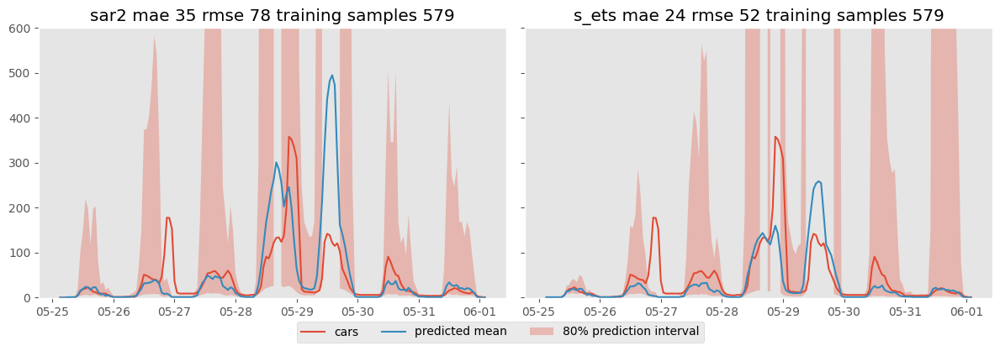
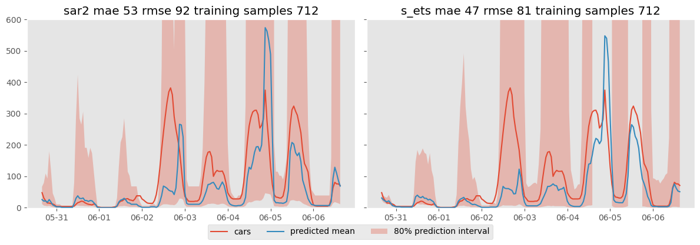
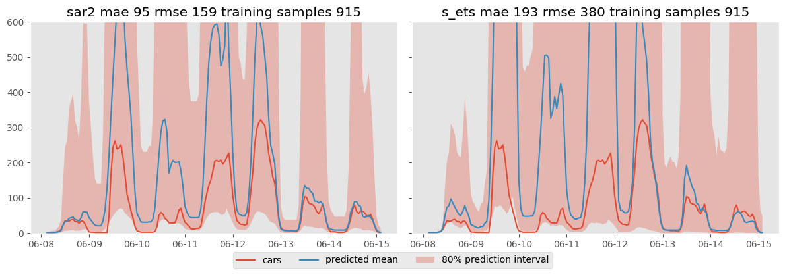
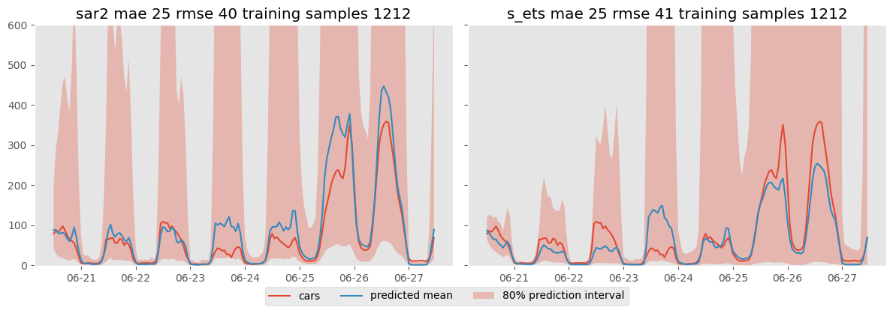
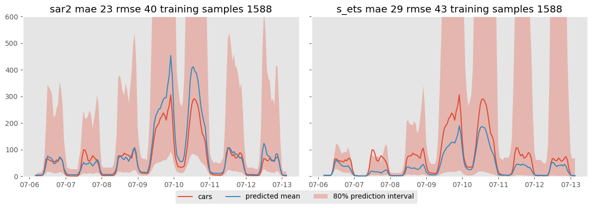
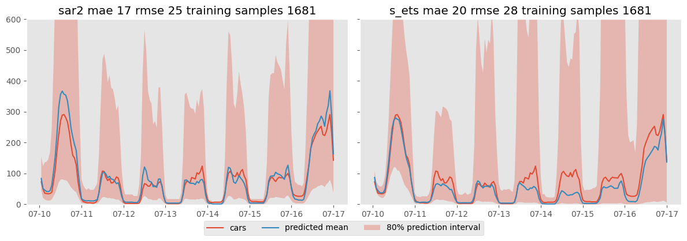
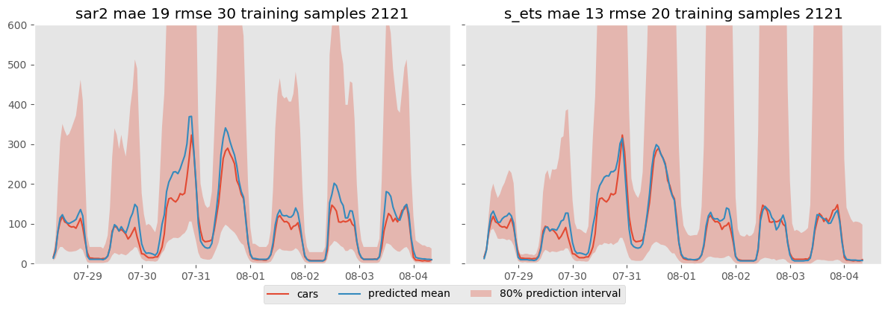
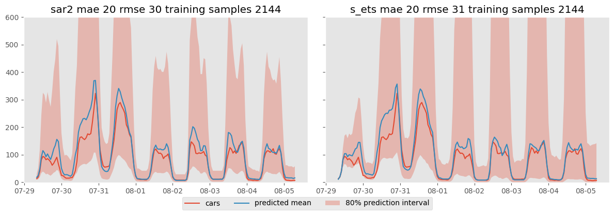
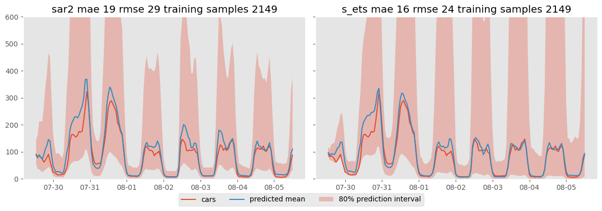
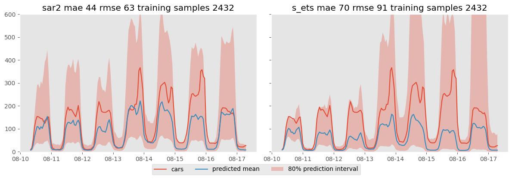
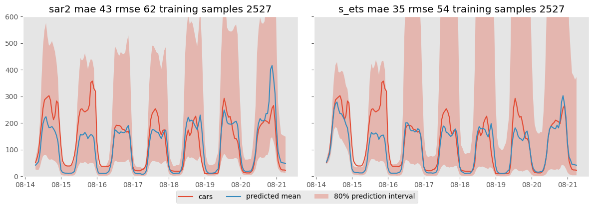
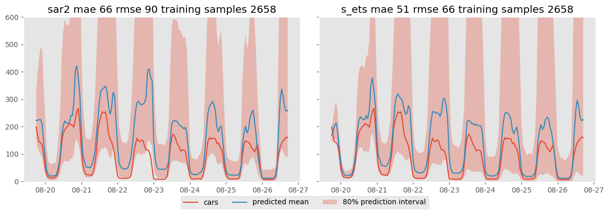
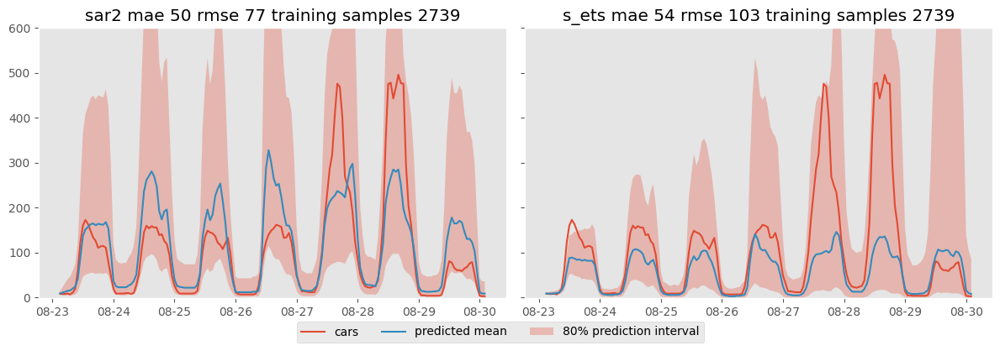
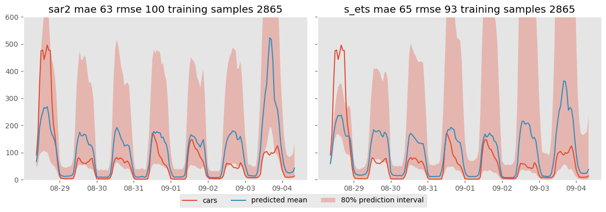
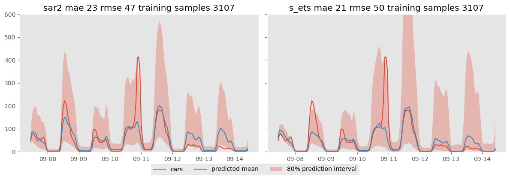
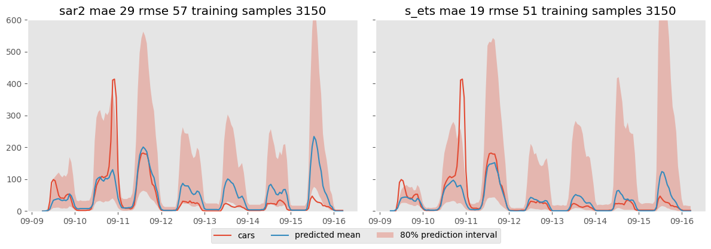
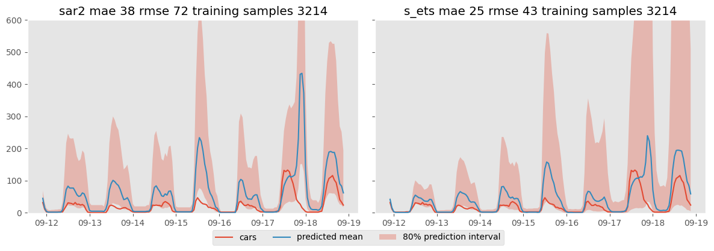
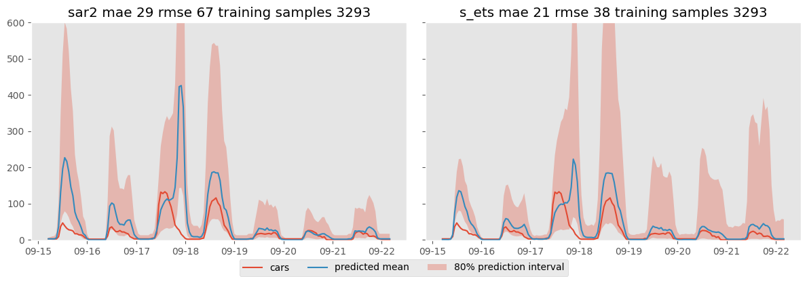
| mae | rmse | ||
|---|---|---|---|
| horizon | model | ||
| 6 | s_ets | 31.450000 | 34.058495 |
| sar2 | 34.066667 | 39.529845 | |
| 72 | s_ets | 37.084722 | 60.003726 |
| sar2 | 399.181221 | 3035.140433 | |
| 168 | s_ets | 50.102083 | 117.424721 |
| sar2 | 190.507330 | 2002.385349 |
Now that we have the full picture, we compare the models. Both models are not robust to outliers: they translate unpredicted outliers to the following seasonal period – see weeks May 15 -> May 22, Aug 16 -> Aug 23, Sept 11 -> Sept 19. The SES model outperforms the SAR(2) because the previous week outliers reverberate less over in the prediction. Moreover, the SES model predicts better even with two weeks of data. The only advantage of the SAR(2) model is that the quantile forecasts are mostly stable when the horizon distance increases
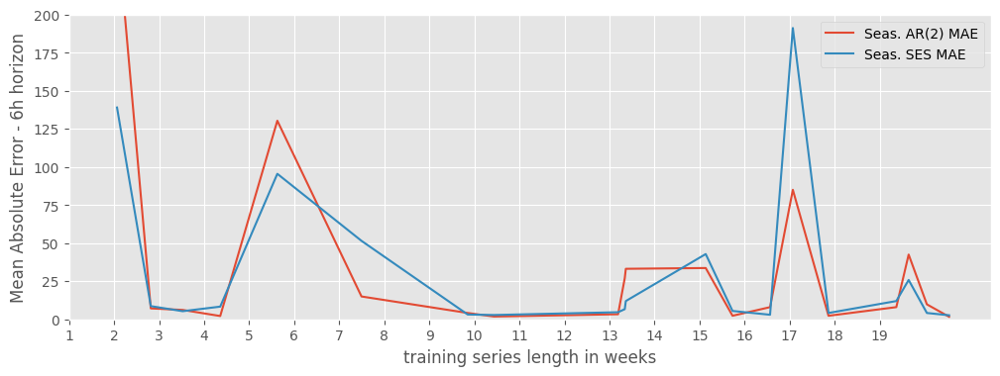
The spikes we see in the MAE coincides with the week with the training size plot correlates with the periods of higher variances.
Final considerations and future developments
- The main drawbacks is that not model robust against outliers: an extreme value in the previous week entails a spike in the predicted mean the following week. Yet, from an operational perspective, since the outliers are easily recognizable, the best model can be deployed in production: the avarage error of 30 lots is enough to schedule shifts and create a dynamic pricing strategy.
- From the modeling perspective, GARCH models may overcome the problem of the heteroschedasticity of our time-series.
- From the analysis perspective, a more systematic approach to evaluate the quantile predictions is computing the Continuous Ranked Probability Score ref
Bibliography
- Rob J Hyndman and George Athanasopoulos, Forecasting: Principles and Practice (3rd ed), https://otexts.com/fpp3/
- Robert B. Cleveland,’ William S. Cleveland, Jean E. McRae, and Irma Terpenning, STL: A Seasonal-Trend Decomposition Procedure Based on Loess, Journal of Official Statistics, Vol. 6. No. 1. 1990. pp. 3-73
- Box, G.E.P. and G.M. Jenkins (1976). Time Series Analysis, Forecasting and Control. Revised Edition. Holden Day, San Francisco
- Hamilton, J., (1994), Applied Time Series Analysis, Princeton University Press.
- Shumway, R. H. and D. S. Stoffer (2010). Time Series Analysis and Its Applications: With R Examples, Springer